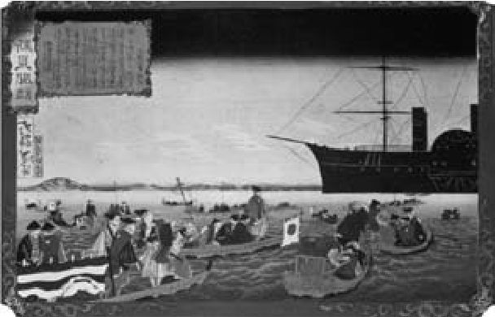
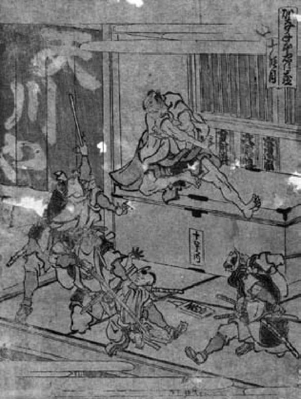

乍一看，现代日本的起源似乎同1853年美国海军准将佩里戏剧性的造访轻巧地合在了一起。在佩里抵达日本之前，日本看上去是一个封建帝制国家，在长达250余年的时间里，自我封闭、与世隔绝；而在佩里抵日后的50年间，日本着实经历了一场革命——拥有现代工业经济和宪政，并生出殖民帝国的萌芽。许多评论者认为，这一令人惊异的迅速转变是由于日本带着震惊遭遇了西方国家先进的科技和力量。根据这种观点，是佩里叩开了传统日本，并迫使日本进入现代世界。然而在这一章里，我们将会看到事实并不那么简单。
美国积极向西扩张，在1845年吞并得克萨斯，后又进行美墨战争，最后趁着所谓的“淘金热”，于1850年9月将加利福尼亚收入联邦。美国怀抱帝国主义野心，且欲与英帝国在亚洲竞争有利可图的贸易机会，这促使美国将目光投向更远的西面——隔着太平洋的日本。在上述背景下，海军准将马修·佩里率领他那四艘著名的“黑船”在1853年7月叩关，便像是水到渠成之事。
佩里在海军圈内以热衷于现代化，尤其是热衷于蒸汽动力船而闻名；他在乘美国军舰“密西西比号”完成著名的初访日本之旅以前，就已获称“海军蒸汽船之父”。由是，下述事实也就颇为重要：正是四艘黑色蒸汽船的出现吓坏了驻守浦贺湾（临近江户，江户即东京的旧称）的当地政府官员，让他们史无前例地允许佩里上岸递交美国总统米勒德·菲尔莫尔的国书。直到那时，日本实行被称为“锁国”（sakoku）的官方孤立主义政策，外国人被禁止进入日本本土，仅有少数荷兰商人自1641年起被允许在出岛居住；出岛由人工填海而成，面积狭小，临近偏远城市长崎。国书包含数项要求日本进一步开放贸易的内容，佩里离开浦贺时还放了话：如果美国的要求得不到满足，第二年他将带来更具实质意味的海军力量，迫使日本顺服。
事实上，美国并非第一个叩关的国家。欧洲船只至少从50年前起就试图撬开日本的国门。俄国舰船早在1792年就开始显现出对北方岛屿北海道的兴趣。已经在中国下了大注的英国于1818年向浦贺湾派出舰船，半真半假地要求与日本建立贸易关系，不过他们的示好被回绝了。1825年，幕府（bakufu）开始对外国舰船的出现感到十分担忧，因而发布命令，要求沿海领主在必要时武力驱逐接近的外国船只，1837年就有一艘美国商船受到炮击。实际上，在19世纪的前50年中，幕府确实以为这样就能拒西方世界于外。1844年，荷兰国王威廉三世派遣的特使尝试向幕府将军解释，自幕府17世纪驱逐欧洲人起，世界已经发生了变化——直到那时，幕府才真正开始重新思考它在世界上的位置。英国在1842年的鸦片战争中全面战胜了中国，这似乎很能说明问题。如果英国能如此有效地羞辱庞大的中国，像日本这样更小、更次要的国家又如何可能避免同样的命运？为免招惹西方列强的重大军事报复，幕府很快废除了攻击外国舰船的命令。正是在上述背景下，佩里初抵浦贺湾。
1854年2月，佩里率九艘船再抵日本，发现日本政府官员愿意签署《神奈川条约》（1854年3月31日缔结）。这一条约要求开放下田和箱馆 [1] 两座港口，并准许美国首次在日本本土设立领馆；后由汤森·哈里斯在1856年7月赴下田任领事。《神奈川条约》一开闸门，欧洲帝国主义列强很快便群起效尤：佩里前脚刚走，法国、英国、荷兰、俄国就紧跟着同日本签订了类似的新条约。
到了1858年，所谓不平等条约制度已牢牢站稳了脚跟，日本虽未遭受一枪一炮的攻击，处境却已同鸦片战争之后的中国相类似（但西方列强同意禁止对日鸦片贸易，这一点明显与中国的情况不同）。日本失去了对关税的控制权，为同西方之间的商贸活动打开了国门，甚至对西方列强允以治外法权这样的特权（这意味着外国国民身在日本的土地，却不受日本法律的管辖）。西方并未通过军事胜利来使这些条约合法化，把条约强加给日本是基于这样一种思维，即日本不是国际社会中的平等一员——不是一个现代的、工业化的宪政政体。我们将会看到，这种耻辱本身不仅有力地激发了19世纪后期日本强烈的民族主义意识，并且也是驱动革命的重要因素。为废除不平等条约，日本不惜一切代价。
必须指出，说条约带来的耻辱伤害了日本一贯保有或早先就有的民族自豪感，这是夸大其词。因为在19世纪中期之前，日本的领土比较松散、零碎、缺乏中心，靠忠诚、军事依存和宗教想象黏合在一起。事实上，在许多方面，在日本建立现代民族意识的进程中，不平等条约带来的耻辱是极其重要的。
在这些历史事件中，佩里舰队展现了现代工业的力量，其重要性不应被低估。实际上，“黑船”的形象在日本很快成了一种标签，既象征西方势力的威胁，又等同于传统日本被现代性的文化和科技力量征服的征兆。一段关于佩里1854年再抵日本时的有趣轶闻体现了这一点。当时的记录描述称，日本官员组织了一场相扑比赛，供美国官员观赏，其目的大概在于用日本的力量和尚武精神震慑外国人。然而，据说美国代表们对相扑场面罕见地无动于衷，觉得表演很可笑。作为回馈，美国代表们组装了一段100米长的环形轨道，配上一个按四分之一大小缩微了的蒸汽火车头，赠给日本官员乘坐。这辆玩具火车所具有的威慑力远远超出相扑角力的原始力量，这便是工业科技惊人冲击力的证明。
佩里多半意识到了黑船和缩微火车头所能带来的影响。在着手完成他的任务之前，佩里阅读了他所搜集到的许多关于德川幕府治下日本的文献；有人认为，他甚至曾向著名的日本学家菲利普·弗朗茨·冯·西博尔德求教，后者在回到荷兰的莱顿之前，曾在出岛的荷兰人聚居地住了八年。然而当时的日本奉行神秘和孤立政策，因此相关信息匮乏。只有极少数西方人能获得有关日本的第一手资料，并且这些人（例如西博尔德本人）也仅能有限地接触到日本这片陌生土地的实际社会和政治环境。东方主义盛行，大多数关于日本的记录染有“神秘东方”的浪漫色彩。在19世纪早期，西方关于日本的记录将日本描绘成一个未曾沾染工业和现代性的封建王国。大多数记录还提到，与其他同样遭遇欧洲帝国主义者的亚非“蛮族”相较，日本实在讨人喜欢：显而易见，日本人有教养、爱干净、处处注意礼貌。汤森·哈里斯的描述就很有名，他将日本形容为简朴、诚实的黄金时代的化身。
佩里所获得的信息在许多方面有重大缺陷。

图2 一幅木版画表现了1853年海军准将佩里的明轮汽船抵达浦贺湾的场景
有一个事实是，尽管佩里知道日本当时是君主政体、由一位天皇（在那时的西方多被称为“Mikado”）进行统治，但他并不知道天皇的朝廷和将军的幕府之间的区别。事实上，1854年离开日本时，佩里认为他是与天皇的代理人签订了条约，但接待他的其实是幕府。这一区别十分重要，且在现代日本历史进程中留下深远影响。幕府这一机构是德川时期政治秩序的关键特征，它使德川政治不同于欧洲历史上那些典型的封建君主政体。即便到了1850年代后期，美国总领事汤森·哈里斯仍坚持把将军称作“日本天皇陛下”。
如果连日本元首的身份这样基本的问题都令佩里感到困惑，那他还在其他哪些事情上受到过蒙蔽？换言之，佩里在1850年代接触的日本，其真实样貌是什么样的？当时的日本是否真如佩里所想，仍处在“前现代”？
经过公元1600年史诗般的关原之战，德川家康最终统一了日本；家康的孙子家光则作为将军自1623年至1651年统治日本——19世纪中期日本的绝大多数制度都是由德川政权的建立者在17世纪初创立的，该政权下的历史时期就以他们的姓氏命名。
在德川治下的和平得以实现之前，是一段漫长的内战时期，这一时期被称为战国时代（sengoku-jidai），其发端是应仁之乱（1467—1477），古都京都遭到洗劫，此后战国时代一直持续到日本被“统一日本的三人”——织田信长、丰臣秀吉及德川家康——平定、统一才告结束。德川家康后在17世纪早期于江户（现东京）建立他的统治中心。在日本这几个世纪几无停歇的战乱中，武士阶级及其大名领主崛起为支配力量，各家佛教寺院的僧兵骚动不安。
织田信长从他的故乡尾张（近今日名古屋）开始的残酷扩张拉开了血腥统一进程的序幕。历史学家常将信长描述为残暴自私之人；的确，信长暴力镇压邻接村落，破坏了无数佛教寺院，烧毁寺院古老的藏经所，屠杀僧侣和信众。
然而，将信长表述为彻头彻尾的野蛮暴君则是错误的。他建立了宽松政策，将对半自治地区的封建统治和半中央集权的、官僚主义的征税机制结合到了一起，为之后的两个半世纪定下了基调。此外，他还着手解除农民的武装，因而也就令武士阶级同日本其他阶级之间的社会与政治区分趋向制度化。正是在这一基础上，信长的继任者丰臣秀吉1588年在全国范围内推行武器收缴（“刀狩”）。至17世纪早期，武士阶级之外的任何人携带刀具都成了违法行为，佩戴两把刀则成为武士这一少数阶级的特权和独特标志。
自1192年源赖朝获授将军称号、建立镰仓幕府以来，“将军”这一称号依传统由天皇授予，信长拒绝接受将军的称号，可谓是空前之举。信长秉持这一姿态，希望表明他并不从属于京都的天皇（这就是说，他不是天皇的“征夷大将军”），而是直接与日本的土地（日语称tenka，字面意思即普天之下）相联系，无须接受皇室的裁度。换言之，信长要求日本承认他的统治权，这种统治权不仰赖相对无权的皇室施与的任何宗教的或神秘主义的认可，而是基于某种现实政治 （这就是说，他在统治方面的权力 本身即已足够令其统治合法化 ）。然而很快，这一激进的做法被信长的后继者们否决：1603年，德川家康接受了天皇授予的将军称号，以稳定并合法化其新政权。德川治下的和平归根结底还是依赖天皇的许可。
信长的继任者丰臣秀吉独立奋斗而成众人领袖，他大约从1557年起就是信长的家臣。家世并不显赫的秀吉依靠他的战略才智迅速蹿升，通过建立细致的结盟体系，切实巩固了信长的成果。至1590年代，秀吉已是覆盖日本全土的大名联盟无可争辩的主人，围绕忠诚、感恩、义务和恐惧的盟誓将每个大名束缚在秀吉之下。他与一批可信赖的副手一起管理领土，副手们密切注视着铺展的联盟和众多宣誓过的军阀。然而，这一前所未有的联盟架构尽管得以成形，却有自掘坟墓的危险，因为它至少是部分地以战争中的赏罚分配为前提。秀吉担忧突然到来的全面和平会产生威胁、导致忠诚体系崩溃：如果不存在可分配给追随者的战利品，那么秀吉合法性的根基何在？与信长不同，为了支撑其合法性，秀吉积极索求天皇授予的将军称号。然而，秀吉提出的要求遭到了断然拒绝。作为最后的尝试，秀吉请求被废黜的足利义昭 [2] （即使在被信长放逐后，义昭仍然保留着将军这一虚衔）将自己收为养子，以继承将军称号。义昭也拒绝了。最终，秀吉接受了关白（成年天皇的顾问）这一原本由藤原氏独占的称号。
日本的军事领导人与皇室之间存在权力 对抗权威 的关系，且已持续多个世纪。我们可以看到，秀吉也卷入了这种复杂微妙的政治关系。事实上，在德川治下的和平时期，这一政治安排的种种问题始终潜藏水下、隐而不彰，至19世纪海军准将佩里叩关，这些问题才在随叩关发生的一些事件中冲出水面。之后我们将会看到，在某些方面，这一动态关系始终存续，直至20世纪上半叶的太平洋战争。在当代日本，战后宪法在法律上明示了天皇的角色和地位，但天皇（如今是地球上仅存的皇帝 [3] ）这一体制在政府（如今对握有主权的人民而不是天皇负责）合法性方面仍被赋予巨大威望和象征性权威。
秀吉渴求象征性的合法性与稳定性，但显然未能得到；在此情形下，他于1592年和1597年发动侵略朝鲜的战争，企图借此驱动“日本”的集体力量。必须指出，这种侵略并非法国大革命之后见于欧洲的那种现代民族战争，而是由企图从冒险中获取利益的武士集团主导的征伐：其间并不存在日本国民军队，在“刀狩”中，人口中的绝大多数已被系统地解除了武装。秀吉意识到，一些大名和大名之下的武士将他们的忠诚建立在战利品的分配上。然而，侵略带来了灾难性的结果，不仅未能支撑秀吉的地位，战争的失败还耗空了秀吉家族的金库，并销蚀了秀吉常胜将军的名号，为德川家康最终崛起创造了机会。尽管如此，秀吉未能得逞的侵略还是预示了新兴国家将国内的不满情绪导向海外征服的趋势。就日本而言，这种扩张主义的首选目标总会是朝鲜，19世纪与20世纪之交时也是如此。16世纪中期，耶稣会传教士开始在九州传教，秀吉对待传教士的方式也体现了他对外国事物的忧虑。信长也许是因为反对佛教寺院势力、否定天皇的宗教地位，故而比较接纳基督徒；秀吉则认为这些欧洲人的出现令人生疑且带着威胁，尤其在西班牙征菲律宾为殖民地后。1597年，秀吉将他的怒气转向耶稣会，迫害了众多传教士和改宗的日本人，至1598年，又将基督徒驱逐出日本。秀吉的这一步下启1635年著名的锁国令，锁国一直持续至佩里叩关前。锁国令禁止天主教存在，认为天主教是危险的、具有颠覆性的意识形态，并禁止所有日本国民离开日本或与荷兰人（也仅限在长崎的出岛这块狭小的贸易窗口）之外的任何欧洲强国接触。法令同时限制了与日本近邻的接触，至少在原则上（即便不是在事实上）限制经琉球王国（今冲绳）列岛与中国进行的贸易以及在狭小的对马岛领域与朝鲜进行的贸易。说锁国使德川时期的日本完全同外部世界隔离开来有些言过其实，但恰恰在欧洲萌发启蒙运动、推动现代科学和哲学的发展之时，这项政策导致日本对当时欧洲状况的了解极为有限。
1598年秀吉死后，他的副手们无力维持政权稳定，因为统一了日本的复杂联盟体系乃是系于秀吉一身。结果就导致了围绕继承权的斗争。最终是德川家康脱颖而出，经过1600年史诗般的关原之战，家康拥有了自己的军事力量和盟友，可与挑战他的联合军（仍然忠于丰臣政权）相抗。在家康取得胜利之后，不出三年，天皇就授予他将军称号，家康接受了。从1603年至1868年，天皇仍被隔绝在京都的宫殿之中，京都仍是名义上的都城，而德川幕府则在江户这一权力中心统治着和平的日本。将军一职一旦获得天皇的承认，就成为世袭的称号，这也就是用德川家族的姓氏命名那个时代的原因（有时也用当时的政府所在地江户来命名）。在1853年和1854年，正是德川幕府即江户政府遇上了佩里。
家康和他的孙子家光在很大程度上决定了德川政权的社会与政治轮廓。战争状态破坏日本长达几个世纪，为了终结战事，家康和家光试图使针对日本长久政治问题的解决方案成为制度，而当时的政治问题主要是人际性、层级性的，牵涉到天皇和将军的关系、将军和大名的关系、大名和隶属于大名的武士之间的关系、武士和其他人群的关系，因而也就是日本的国民与将军的关系。
德川创建的制度化解决方案常被归结为幕藩体制（bakuhan taisei），这一体制表面上是一个封建的政治结构，在一个单一的体制中将幕府（帐幕/ 军人政权）与藩（大名统治的领地）联系起来。然而，对于这一体制是否确属封建，目前仍存争议。论争中的一个关键问题与现代时期有关联，关乎天皇和将军的动态关系：封建体制在其顶端容纳两种不同的制度权威——帝国权威和将军权力，这不同寻常。这样的张力是日本历史中不稳定性的典型来源。
家康以十分务实的方式解除了张力：他并不是只承认皇室的任命是幕府合法性的前提（这意味着他的将军职位处于相对下位），而是同时非常明确地表示皇室的存在完全依赖于幕府。这一依赖关系越过了第一批将军原本的授权范围（即作为天皇的剑来保护领土）。在早期现代世界，皇室面临贫困和崩溃的风险——为保自身的存续，皇室实际上仰赖德川提供的经济支持。
家康不可能让皇室消失，相反他让皇室为他所用。通过向皇室提供资金（并且让皇室留在京都，远离他的江户新政府），家康成功地提升了皇室的庄严与地位，但也进一步强调了皇室主要是象征的性质、进一步令皇室远离实际权力。同时，他可以利用天皇对幕府的依赖来支撑幕府的合法性。为回报幕府提供的经济支持，皇室事实上移交了其最后的残余权威，甚至包括在领土范围内授予皇家荣誉的权力。在许多方面，德川政权将皇室转化成了一种现代的君主立宪政体（尽管日本直至1868年才有了宪法，并且1868年宪法授予天皇的权力远远多过德川政权下天皇所享的权力）。
事实上，家康对这一具有惊人的现代特征的结构并不满意，他采取措施，赋予将军一职以独立于皇室的（甚至是同皇室竞争的）、自有的宗教及精神合法性。他在江户附近设立新的宗教场所（例如他自己的神社，位于日光 [4] ），这些场所逐渐成为全国性崇祀场地，地位同包括伊势大神宫在内的传统皇室神社相当。实际上，宫中人士也须对这些德川神社致敬，并无任何特权。正如之前的信长，家康希望他的幕府不必受皇室的裁度，直接与天下相联系。德川政权不仅令天皇处于从属地位、成为政体的工具，同时又着手建立根本无须天皇的国家意识。上述两个进程在某种程度上相互冲突，德川政权于是未能成功地发展出非帝国的国家意识，这一失败反而成为19世纪革命性的动乱得以产生的重要条件。
天皇和将军的关系问题得到了稳定的解决后，下一个问题关乎将军和大名领主的关系。实际上，这可能是关原之战后最重要、最紧迫的问题，因为如果不能扎实地整合（并且圆满地安抚）军阀，任何政府体制都会遭遇毁灭。为此，家康采用了奖惩并用的方法，对于那些在关原之战中向他显示忠诚的大名（所谓的谱代大名），他拉拢并授予他们权力；而对曾经反对他的大名（所谓的外样大名），他则排挤并剥夺他们的权力。在事实上，这意味着让大名离开他们的传统领地（由此使大名与他们的基层权力根基分离开来），没收许多领主的土地，将广阔的土地再分配给德川家族本身，然后将剩下的土地分配给人数已大幅减少的大名群体。结果产生了大约180个大名，呈现新的分布状态，每个人都发誓效忠德川家族。这些大名被禁止在领地上建造多于一座的城池，也被禁止相互结盟；在形式上（即便不是在事实上），将军政治这一国家制度是大名相互联系的唯一纽带。谱代大名领有离江户和德川领地最近的土地，而外样大名则势必集中在外围，领萨摩和长州等偏远之地。
家康以这种方式保护了自己，但代价是无法严密监视最有可能憎恨他的权力的那些大名。不幸的是，由于种种因素，那些大名的领地也最有可能遭遇外国列强（并同外国开展贸易）。秀吉试图但未能将九州的基督徒斩草除根；家康的锁国令也并未切断日本同外部世界的所有联系。由于萨摩藩和长州藩师法外国、相对开放，至19世纪，两藩在日本国内的势力得到了尤为显著的增强。
实际上，上述中央集权化进程绵软无力，这部分是出于蓄意的手段，目的是缓和对中央集权化进程的抵触；同时也是因为现代民族国家典型的中央集权化程度在当时的日本尚属不可想象。各领地保持高度的财政自治——尽管大名有义务助力公共建设及其他支出，但当时并不存在一贯的、集中的税制——这一点很重要。全国范围内的财富差异因此十分显著。不过，德川政权向所有大名施加了一项极其重要的财政（战略）负担。1630年代后期，德川家光实行了参勤交代（sankin kôtai）制度，令日本的每个大名都有义务同时在江户和他们的自有领地保有居所。并且，大名事实上还被要求每隔一年就亲赴江户居住，而大名的直系亲属则必须永久居住在江户。大名的亲属实际上就是留在江户的人质，尽管他们获得厚待。
参勤交代制度在许多方面都对现代日本的发展有重要影响。首先，保留两处通常相距遥远的常居之所，再加上每隔一年就得带着全部随从从一处“迁行至”另一处，这就形成对大名资产的严重消耗，从而能有效地抑制大名自治权力的增长。此外，即使存有异心的大名在财政上能够承受战事，人质体制也使他们不能起而反对德川统治。不能低估这些因素在稳定德川统治方面所起的作用，尤其是在德川政权的初期，一些领主对过去几个世纪的战争带来的后果记忆犹新。然而，从长期来看，参勤交代制度对财政的冲击导致巨大的社会和政治张力，在佩里叩关之前，这样的张力就已促使德川政权走向衰亡。
参勤交代制度还导致了另一重要结果——催生了“国家”意识，而这在日本历史上可能属于前所未有。所有大名，无论来自何处、无论信仰为何，都必须有一半时间常住江户，这就巩固了江户作为日本实际首都的地位（即便京都仍在名义上保留首都之称）。并且，大名的这项义务是由国家法律 规定的。这样，参勤交代制度不仅促使大名及其随员认同一个以国家为单位的组织形式，而且还强化了一个事实，即国家范围内的中央权威乃是幕府这一世俗机构，而非皇室这一传统而神圣的权威。此外，由于有一半时间远离故土领地，大名与其传统地方支持网络的关系大为削弱。原是地方性 领主的大名，逐渐变成了全国性 人物。
参勤交代制度一个重要的副作用是，它使碎片化的国家布满交通路线和贸易机会。大名及其随员的隔年迁行串起了沿途各地的经济，市镇和贸易站因此迅速增多，由此发展起来的道路网络在世界范围内也堪称惊人。这些成就中最大的奇迹包括大坂 [5] （位于连接京都与江户的东海道干线道路沿线）的飞速发展，还包括中山道干线道路（跨越日本阿尔卑斯山脉）的建设。参勤交代制度着实开启了全国性市场经济（在17世纪时急剧增长）的发展，并为19世纪时经济的快速现代化打下了基础。
参勤交代制度促成的地区流动还启动了城市化进程。至17世纪末，江户已是地球上最大的城市，拥有超过100万人口。今日东京仍然是世界上规模最大的城市之一，属于这个大都市的人口超过3500万。 [6] 京都和大坂这样的地方首府城市在当时约与伦敦或巴黎规模相当，拥有约35万人口。大阪如今仍是日本第二大城市。总体而言，在17世纪末，日本大约有10%的人口在较大规模的城市居住，是世界上城市化程度最高的国家之一。不仅如此，由于新的社会稳定（及连绵战事的终结）、国内贸易的增长、教育水平的提升和农耕技术的发展，日本的人口实际上在17世纪翻了一番，至17与18世纪之交，日本人口约达3300万。比较而言，当时英国的人口约为500万，并且要到19世纪下半叶始达3000万。
但日本无法保持这种高增长，至少部分是因为列岛贫瘠的自然资源严重阻碍了国内市场的发展，尤其是幕府还奉行自我孤立、禁绝同亚洲大陆的贸易，同欧洲就更不必提了。结果呈现为经济及人口统计数字的停滞，德川政权治下的最后一个百年，两项数据都是零增长。因此，伴随着所谓的全球化的第二阶段，当西方再次撬开日本国门时，日本除了扎下资本主义之根外几无发展，并且19世纪的日本尽管在文化和艺术方面取得了巨大的成就，在经济方面却基本上仍是一潭死水。事实上，日本在18世纪及19世纪早期经历了大规模饥馑、攀升的杀婴率和加剧的社会动荡——佩里叩关之前，日本就已飘摇在危机和革命的边缘。相反，在同一时期，英国的人口猛增至与日本相当，工业化的、帝国主义的英国经济在全球狼吞虎咽地疾驰。
在德川治下的日本，空间归于国家的意识逐步形成，地区流动因此达到了新的水平，阶级之间的社会流动却未能相应实现。实际上，德川社会最强有力的特点之一，就是建立了被称为士农工商（shi-nô-kô-shô）的社会分层体系，这一体系决定了人口中绝大多数的地位与功能，同时也决定了人们与大名的关系。在四层结构中，武士（士）被奉为神圣、处于等级制度的顶端，农民（农）在地位上次之，其后是工匠（工），最末是商人（商）。出身决定了人在这一等级制体系中的位置，后天的流动极端困难、几近不可能。为德川政权奠基的思想家——例如新儒林罗山——用儒家术语论证了上述体系的合理性。
儒家理念强调孝与忠的重要性，尤其强调各种角色在社会中的本分。统治者与被统治者之间存在理性的、合乎自然的关系，正如天垂于地，又如父为子纲、子应尽孝。这些关系被认作自然秩序中不可分割的固有部分，因此人的意志不能向其挑战。在德川政权方具雏形的背景下，这种对稳定的诉求十分有效，并且赋予士农工商体系中存在的僵化及社会流动的不足以合理性。尤其是，林罗山认为人民应效忠将军（而不是效忠天皇，林罗山将天皇非政治化），实际上是把将军描绘成国家之父。换言之，德川政权运用了一个民族化的、理性的政治义务模型——德川治下的日本是当时世界范围内最为“现代”的社会之一。
所谓的“德川意识形态”也从佛教中提取元素。事实上，16世纪末秀吉完成了艰巨的任务——解除许多佛教寺庙的武装力量后，德川家康和后来的家光通过责令领土上的所有平民都到佛教寺庙登记而重新接纳了佛教。德川对佛教的支持也许在无意间成了一种手段，冲击了天皇在神道教中的神圣地位。神道教是日本的本土宗教，在《古事记》（约公元712年）中可以找到文字来源，按其中的说法，天皇是“天照大御神” [7] 这位太阳女神的直系后裔，因此应被当作在世的神来崇奉。然而，从社会秩序的视点来看，佛教（尤其是禅宗）还扮演了另一个角色：由于铃木正三等思想家的影响，坚忍克己的禁欲主义原则和非歧视原则促进了稳定，消解了士农工商体系内部的异议和反抗。禅在武士当中尤其受到欢迎，数个世纪以来，武士在日本社会中第一次发现自己失去了军事作用。武士与禅的密切关系在今日的小说与电影中极为常见，事实上，这种关系是以和平到来、武士转而热衷于禅为基础的；在早先的战国时代，武士战事缠身，武士禅宗根本不是那一时期的特点。
然而到了18世纪，德川社会体制开始成为自身成功的牺牲品。稳定的状况逐渐显得了无生气，如何适应乃至鼓励社会变 革 变得十分重要。尤其是，随着经济步履蹒跚，社会评论人士开始注意到城乡同时出现的贫困与苦难程度的加深。新兴城市卫生状况不良，乡村各处则频现饥荒，农民（占人口的80%）的劳苦只增不减。与此同时，新兴的商人阶级逐渐变得更为富裕，尽管他们表面上仍处在社会等级体系的底层。同一时期，武士在德川体制中基本是只消耗不产出，逐步丧失传统的财政途径；尽管武士处在地位体系的顶层，但很快便没有了显示地位所需的经济实力。此外，由于没有战事，武士的价值（以及他们所宣称的坚忍克己的价值观）便无法体现，人口中的其他阶级渐渐便不再尊重武士。武士约占人口的6%，地位基于世袭而非功绩，因而武士的无能逐渐招来了普遍的愤恨，最终导致“武士的能力”实际上成了一个侮辱性的短语。武士对新兴城市阶级的商业价值感到不以为然，但武士自身就是所谓的浮世（ukiyo）——迅速膨胀的城市欢场——最铺张招摇的老主顾，这种明显的虚伪性加速了武士的衰落。颇具讽刺意味的是，武士的光顾助推了艺术领域的井喷式发展。这一时期，一些早期现代日本最著名的艺术形式已经生根发芽，尤其是浮世绘（ukiyoe）和歌舞伎（kabuki）剧场，而后者还兼容纳那些身为高级妓女的女演员。浮世中人严格来说并不属于士农工商体系，因为他们代表新的商业和艺术职业，这些职业并不能被简单地归入哪一个传统类别。直至今日，欢场仍然是日本一些主要城市多彩的组成部分，当代日本的名人崇拜较以往任何一个时期更甚。
一些当代评论家——例如著名政治理论家丸山真男——认为，18世纪艰难的状况实际上为日本现代性的种子提供了播种的土壤。丸山真男及其他评论家特指荻生徂徕的作品，徂徕是所谓的古学（kogaku）的先驱。徂徕尽管也处在儒家框架之内，但他代表着对儒家理学正统的极大挑战。他承认在中国古代经典中能够找到正确的思与行的基础，但他认为，以静态的、保守的方式死搬文本的字面，这是错误的。他论述说，基于对原始文本的坚实治学，同时基于当下特定的环境，去解释、调整以文本为基础的实践，乃是伟大领导者的历史使命。换言之，徂徕认为，即使是儒家的政治体制也应该动态地适应社会需求的变化，并且，只为保存先前稳定的状态就固守过去的做法，这在道义上是错误的。不能就此说徂徕是在呼吁幕府成为一个负责任的、积极响应的、尊重日本人民社会与政治权利的现代政府，但一些历史学家仍认为，徂徕的见解为现代的上述种种发展打下了基础。
徂徕的批评尤其指向他眼中的那些过时但仍持续存在的社会事实，例如武士对新兴商人阶级的傲慢态度。事实上，武士在德川治下社会中的角色是一个核心问题，因为武士阶级的存续越来越难以维持其合理性。1702年之后，所谓的元禄赤穗事件就是一个苗头，这一事件也被称为“四十七浪士（无主武士）的复仇”。这一著名的故事如今已是日本国史上的传奇，说的是47名武士的大名领主（赤穗藩主）被迫切腹（seppuku）自杀，武士们遂为主复仇。尽管德川政权实际上已严令禁止仇杀，忠诚的武士仍用了22个月来密谋复仇，并且他们知道，无论复仇是否成功，他们都将去死。最终，浪士们实施了他们的计划，刺杀了造成他们的领主死亡的大名。而后他们向政府自首，并自愿以切腹来赎罪。
这一事件在当时引起了极大争议，直至现代，它仍是日本国家认同的一个重要组成部分。在徂徕看来，无论47浪士拥有何种侠义价值，他们的行为都是背叛了一种过时的、对于某个大名的忠诚，而不是背叛了日本这片土地上的法令。47浪士是前国家时代的偶像，他们体现了武士阶级的传统价值如何可能成为日本现代化的障碍。然而，在日本人中的其他部分（包括其他武士）看来，这些浪士的行为代表了武士道（bushidô）的理想，并且体现了未被德川治下的和平根除的那些传统价值——忠诚、牺牲、隐忍和荣誉。元禄赤穗事件实际上很快便成了日本文化中最受欢迎的主题之一，启发了歌舞伎和文乐（bunraku） [8] 的剧作家，直至今日仍给艺术家们带来灵感。近松门左卫门大概是日本最伟大的剧作家，他曾写过元禄赤穗事件最著名的剧作版本——《忠臣藏》； [9] 日本最伟大的浮世绘艺术家——广重、北斋、国贞，当然还有国芳 [10] ——都曾依据赤穗事件创作过系列作品。在当代艺术中，电影、小说、漫画、动画乃至电子游戏都曾取材于赤穗事件，浪士们的墓也成了旅游名胜。
换言之，传统价值和新的社会价值之间的张力与现代化进程相伴，在18世纪初就已是德川社会的重要特征。武士作为坚忍克己的可敬家臣，愿意为他们的领主牺牲生命——这种浪漫的形象成了流行文化的素材，既是为大众的消费，也是为了武士自身。

图3 《忠臣藏》一剧中的场景，浪士身着警察的服装。木版画，约1804至1812年
但这些理想形象同德川治下日本的实际生活经验形成了鲜明的对比：大多数武士从不曾在战斗中拔刀；仇杀已被禁止；武士们被要求向将军和天下——而不是向地方领主——效忠；城市中的武士逐渐成为堕落的消费者，乡间的武士则很快便失去了他们的地位。在很多人看来，武士是社会的负担，而非偶像。这样一来，具有讽刺意味的是，尽管元禄赤穗事件在短期内有冲击社会秩序之虞，但实际上，这一事件很快便成为建构现代国家意识的重要元素。
因此，在佩里叩关时，日本是一个复杂且充满矛盾的社会。它具有现代国家的许多特征，覆盖全土的国家机器处在江户幕府世俗权力的控制之下，但幕府又依靠京都皇室的宗教权威来为其提供一部分合法性。历经数个世纪的和平与相对的稳定，日本拥有成熟的国内市场经济，尽管它仍同区域内的亚洲体系保持着一定的距离。日本的民族文化欣欣向荣，尤见于江户、大坂这些运行良好的大型城市。然而，政权的意识形态及经济根基却支离破碎，在过时的、刻板的等级体系中，社会张力在阶级之间发酵。幕府缺乏集中或连贯的税制，未建立军事力量的全国动员体制，对于半自治的领地同外部世界的关系，幕府仅具备有限的控制力。换言之，佩里接触到的是一个正处在现代化进程拐点的国家，由于政体刻意维持静止和稳定，这一进程从一开始就遭遇了挫败，但这也意味着政体即将迎来变革。历史学家将1853年至1868年间的时期称为幕末（Bakumatsu）——将军政治在此终结。
佩里叩关刺激了不稳定的混成局面，触发并促成了一系列事件，这些事件最终推翻了幕府，并将天皇置为一个现代宪政国家的元首。在两个多世纪中，幕府小心翼翼地培育它在日本的至高政治地位，并且孤立皇室、使其仅具象征性的机能。或许幕末一系列事件中最令人费解的举动，正是由幕府自导自演。首先，在佩里1853年首次踏上日本土地之后，幕府主要的主政人阿部正弘就如何应对佩里的最后通牒征求了大名的意见，这一步属于前所未有。阿部的出发点可能是要建立一种国家共识，这在面临威胁之时固然很重要，但就结果而言，却更像是意味着幕府在紧要关头缺乏统领所需的权限。事实上，这最终导致阿部被迫辞职。共识无法达成，有实力的攘夷派大名集团登上了国家政治的舞台，他们已在谈论，认为天皇可以在这一前所未有的危机时刻化身为更强大的国家领袖。
下一个事件更为惊人。佩里再次来到日本，汤森·哈里斯赴下田任美国领事，此后，议题就转向了贸易条约。当时，将军德川家定病弱濒死，而他的继承人问题还悬而未决。阿部的继任者堀田正睦面临艰巨任务，需要为上述两个问题寻求解决。堀田与谱代大名想要接受哈里斯的贸易条约，并拥立较易控制的德川家茂，家茂时年12岁，是纪州藩主的继承人，属于德川家族的支系。不幸的是，由于幕府在此艰难时刻明显虚弱无力，外样大名（尤其是萨摩藩）及其他攘夷诸藩（例如水户藩，该藩实际上是德川家族的支系）对于上述两项主张都持反对意见，他们希望拒绝签订条约，并要拥德川庆喜为将军（庆喜是有实力的水户藩大名德川齐昭之子）。
面对这种分歧，堀田采取了惊人的办法，他去了京都，要求孝明天皇批准哈里斯的条约，并认可幕府选择的将军继承人。数个世纪以来，这是天皇第一次被拖进政治决策的核心。但堀田失策了，结果是天皇直陈攘夷见解并表示支持德川庆喜；对于越来越倾向帝国主义的萨摩藩和水户藩，孝明已有所耳闻。带着羞辱，堀田回到江户，德川幕府的合法性在根本上已遭到破坏，带回来的天皇指令又同幕府对将军一职的意见相悖。堀田于是辞任了。
堀田的继任者是井伊直弼，尽管井伊施行镇压 [11] ，但幕府的合法性已经受损，覆水难收。井伊针对激进大名的强硬作风加剧了攘夷集团同幕府的疏离，愈发将他们推向倒幕尊王的立场。不出两年，一群水户藩武士在江户的核心地带暗杀了井伊 [12] ，此后幕府迫于威胁表现得尽可能配合。例如，1862年，将军最终废除了参勤交代制度，并要求大名动用他们储有的资金来建设自己的地方军事力量，以助力国防。这一步本意或许是示好，但从结果来看，却是在政治上剥夺了江户的中心地位，还为难驾驭的大名解除了一项最重的财政负担，同时在事实上鼓励这些大名建立有力的私人军队。德川虚张的国家统一日渐解体。
而后，至1860年代，幕府同时受到三种不同的威胁。首先，越来越感到不满、越来越不受拘束的外样大名挑战着幕府的统治。第二，出现了青年武士即志士（shishi）主导的社会起义的真实危险。志士自称“勤皇家”，认为幕府非法篡夺了天皇的位置，故而以在日本恢复天皇的直接统治为目标。这些志士实际多见于外样诸藩，尤其是萨摩藩和长州藩，但也有的来自更靠近中心的地区，如水户藩。他们原本聚在“尊王攘夷”的口号之下，但在吉田松阴（长州藩出身）、坂本龙马（土佐藩出身）等武士知识分子的领导下，志士对于西方的认识逐渐趋于务实，视西方科技为推翻幕府及抵御西方所需力量的保障。幕府的第三个威胁来自日本之外，也就是西方列强施加的压力。然而，在许多方面，这一外部压力实际上属于前两个威胁的背景，并非自成挑战。
在京都过激氛围的影响下，孝明天皇本人也开始重申皇室的权威。1862年，他向将军发出了一份官方要求，要他的“征夷大将军”在1863年6月25日之前将西方蛮夷逐出日本。期限到了，幕府并未着手驱逐。然而，在日本的其他地方，倒幕的“勤皇家”却躁动不安。长州藩的武士努力用西方的火器武装自己，他们实际上在沿海一带向美国船只开了火。报复来得既快且猛。结果之一便是长州藩成了激进派和勤皇家的聚集地；第二年他们组成了军队开赴京都，意欲“解放”天皇、令天皇摆脱幕府的控制。
在土佐藩士坂本龙马的斡旋下，长州和萨摩这两个外样藩开始认识到他们之间有许多共识。两藩都对德川政权长期不满，并且藩内武士比例极高（达到25%），这些武士还都倾向于“勤皇家”理念。此外，在佩里叩关之后，这些偏远的藩都利用了远离江户的条件，小心但热心地学习着西方知识和现代科技。至1860年代中期，他们迅速发展起了现代的军事力量，其规模少说也同幕府的军队相当。长州藩士如高杉晋作甚至更进一步，创立了接收非武士出身者的军队，事实上终结了250年来“非武士出身者不得进行武装”的禁令。实际上，高杉的民兵组织或许是日本第一支现代的“人民”军队。
1866年，长州与萨摩结成了生死攸关的秘密（非法）同盟。同一年，德川家茂死于心脏病，水户藩的德川庆喜新任将军，决心发动一场征伐长州的战役，以惩长州之祸，欲杀鸡儆猴。庆喜本人也推行现代化，彼时幕府在建设现代军队方面得到美国和法国的可观援助。然而，当幕府军队迫近位于西南边陲的长州时，萨摩藩却出人意料地拒绝了幕府的援战要求。结果，幕府军队为长州所败，不得不忍辱后撤，穿越整个日本回到江户。数个世纪以来，幕府第一次被证明在军事上无力控制领土；它宣称的最后也是最基本的合法性遭到了摧毁。在其后的几个月中，全国各地爆发社会动荡，农民纷纷起义；这反映了合法性危机，战败的幕府军队回归故里的景象、1867年孝明天皇之死所代表的变革征兆都加深了这一危机。孝明之子在1867年2月即位，他就是明治天皇。
在幕府战败的余波中，土佐藩再次试图斡旋，欲让将军庆喜承认大规模政治改革的必要性、接受普鲁士式的议会、同意将主权返还给天皇。庆喜实际上似乎认可了这些改革。然而，这对幕府而言已经太晚——萨摩与长州的大名决定抓住机会，将局势控制在自己手中。1867年12月，上述两藩的联合军采取大胆行动，开进京都，占领了城市，并控制了皇居。不出一个月，联合军便说服刚即位的天皇明治宣告王政复古，于1868年1月通过敕命事实上废除了幕府。
将军庆喜抵抗敕命，由此爆发的血腥冲突后被称为“戊辰战争”。事实上这场战争在几个月内便结束了，因为庆喜对京都的进攻被轻易抵挡，他不得不撤回江户。江户本身也于1868年4月陷落，庆喜旗下那位富有传奇色彩的指挥官胜海舟，拱手将江户送给了天皇的军队，显然是因为他认为统一与和平较保存幕府来得重要。明治维新便在这样的条件下开始，它是一场现代革命，拥有使用西方火器并以西方式战略思维为指引的现代化兵役军队。